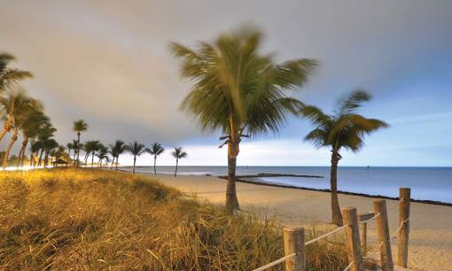
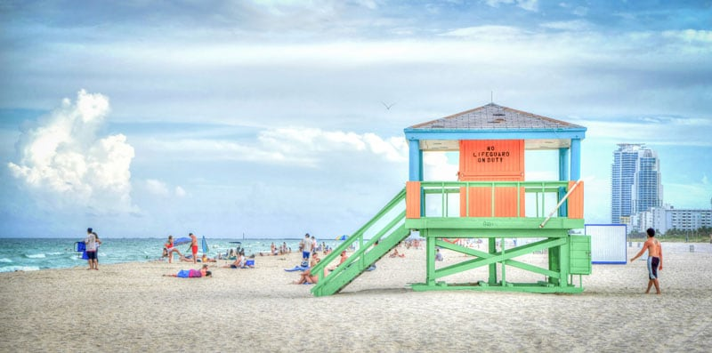

- Главная /
- Туразметки /
- Флорида – совершенная гармония в погоде!
Флорида – совершенная гармония в погоде!
Отличные пляжи, увлекательная дикая природа, большие города, маленькие городишки, отличная еда и замечательная погода — это лишь самая малость того, что вам может предложить штат Флорида.
Именно здесь круглый год можно ходить в шортах и любоваться белоснежными пляжами. Флориду словно специально поместили между тёплым Мексиканским заливом и холодным Атлантическим океаном. При таком контрасте погода достигла совершенной гармонии!
Именно здесь круглый год можно ходить в шортах и любоваться белоснежными пляжами. Флориду словно специально поместили между тёплым Мексиканским заливом и холодным Атлантическим океаном. При таком контрасте погода достигла совершенной гармонии!

Увидеть всё своими глазами можно, заглянув в интересный городок – Санкт-Петербург. Вы не ослышались, ведь основал его выходец из России. В этом месте практически всегда солнечная погода! Сент-Пит, как называют его местные, даже был зафиксирован в книге рекордов Гиннеса – 768 солнечных дней подряд.
Штат Флорида богат отличными пляжами с чистейшим белоснежным песком. Кроме того, вода здесь настолько чистая, что хочется обнять весь подводный мир обеими руками! Один из самых больших пляжей в США находится именно в этом солнечном штате и называется «Пляж №1». Он занимает целых восемь километров на берегу Мексиканского залива
Штат Флорида богат отличными пляжами с чистейшим белоснежным песком. Кроме того, вода здесь настолько чистая, что хочется обнять весь подводный мир обеими руками! Один из самых больших пляжей в США находится именно в этом солнечном штате и называется «Пляж №1». Он занимает целых восемь километров на берегу Мексиканского залива

Но кроме солнца и невероятно приятной погоды здесь живут интересные морские обитатели – ламантины. Эти огромные млекопитающие похожи на подводных собачек, которым можно почесать брюхо или поплавать в дуэте недалеко от берега. Всего в мире их осталось около десяти тысяч, но во Флориде их больше всего!
Также в этом штате, на фоне милейших подводных созданий, можно окунуться и в более агрессивные воды. Одна из таких достопримечательностей – «Логово Дьявола». Называют эту пещеру не только из-за разницы температуры между водой и воздухом, благодаря которой образуется пар. Более тысячи лет назад её верхняя часть обвалилась и рухнула вниз, взяв с собой людей и животных. И до сих пор здесь находят останки жертв ловушки «Логова Дьявола». Если вы дайвер и ищете приключения, вам нужно подготовиться очень хорошо, ведь узкие лабиринты пещер просто так могут и не отпустить!
Также в этом штате, на фоне милейших подводных созданий, можно окунуться и в более агрессивные воды. Одна из таких достопримечательностей – «Логово Дьявола». Называют эту пещеру не только из-за разницы температуры между водой и воздухом, благодаря которой образуется пар. Более тысячи лет назад её верхняя часть обвалилась и рухнула вниз, взяв с собой людей и животных. И до сих пор здесь находят останки жертв ловушки «Логова Дьявола». Если вы дайвер и ищете приключения, вам нужно подготовиться очень хорошо, ведь узкие лабиринты пещер просто так могут и не отпустить!
Штат Флорида подарит вам приятный и беззаботный отпуск и не оставит без экстремальных экскурсий в бездне необъятных вод!
Будете во Флориде – не поленитесь заехать в Космический центр Кеннеди. Это примерно в одном часе езды от Орландо. Место является очень излюбленным среди туристов – именно тут вы сможете посмотреть на запуск ракет и экзотическую дикую природу
Будете во Флориде – не поленитесь заехать в Космический центр Кеннеди. Это примерно в одном часе езды от Орландо. Место является очень излюбленным среди туристов – именно тут вы сможете посмотреть на запуск ракет и экзотическую дикую природу